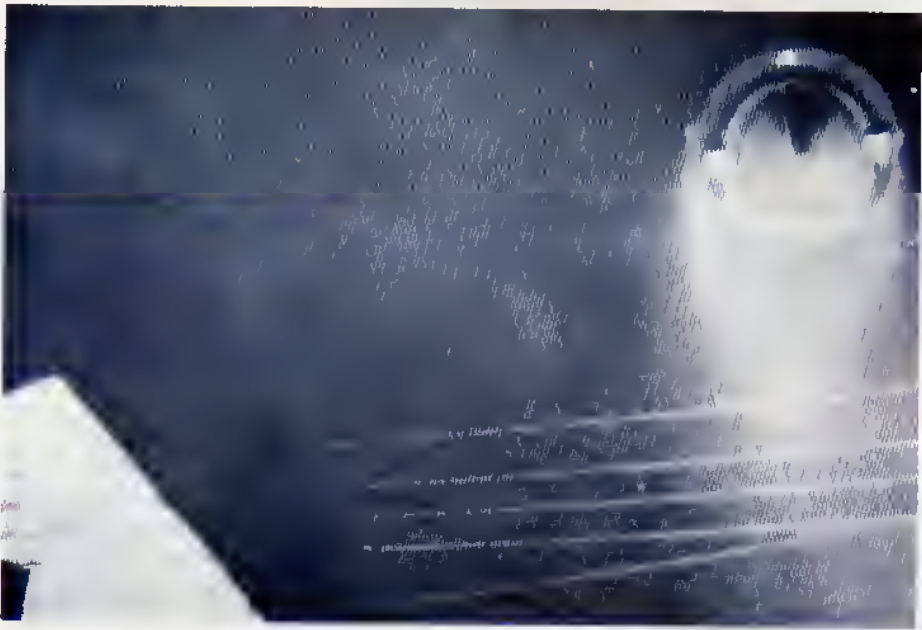

La question des canulars présente un aspect intéressant du phénomène ovni. Elle peut tester si les enquêtes ufologiques sont bien menées et mesurer la puissante "envie de croire" de nombreux auteurs et enquêteurs ufologues. Ce ne sera que lorsque, et si, ces leçons seront pleinement appréciées que les ufologues sérieux se débarasser de la suspicion d'être souvent victimes, volontairement ou non, de canulars.
Le physicien anglais David I. Simpson mit au point il y a quelques années des canulars très rélévateurs sous forme d'expérience ovni
contrôlée
. Selon son rapport publié dans le n° de printemps du Skeptical Inquirer, les
tests ont comparé des détails connus de stimuli 'ovni' fabriqués avec les déclarations d'enquêteurs qui
s'ensuivirent
. De plus, Simpson voulait tester les capacités des ufologues en laissant des indices qui
pourraient suggérer une explication. Les canulars furent
conçus pour présenter des incohérences substantielles qui permettraient à tout enquêteur un peu critique d'avoir de
sérieux doutes quant à leur authenticité.
Une expérience en particulier fut menée le soir du , alors qu'un groupe britannique de passionnés d'ovnis près de Warminster (Wiltshire), était à la recherche d'ovnis qui avaient été signalés fréquemment dans la région. Simpson installa un projecteur rose sur une colline voisine. Lorsqu'il l'allumait ou l'éteignait soudainement, un faux "détecteur magnétique" sonnait une alarme sur le site d'observation. Un complice avec un appareil photo contenant une pellicule préexposée (qui contenait déjà des images d'ovnis) faisait plusieurs clichés de l'horizon puis confiait l'appareil — avec la pellicule à l'intérieur — à un ufologue réputé.
Simpson avait préparé la pellicule du canular de manière à ce que la direction photographiée et l'apparence de l'"ovni" soient grossièrement différents de ce que les observateurs avaient effectivement vu. Il veilla également à ce que les 2 premières images préexposées (prises presque 1 an plus tôt) montraient des arrière-plans significativement différents des 2 expositions réelles suivantes (qui bien sûr ne montraient aucun ovni). Cela aurait dû être évident même pour l'enquêteur le moins expérimenté.

Mais personne ne sembla remarquer (et personne n'interrogea même le photographe). Après 2 mois d'étude par des
experts ufologues en Europe, les photographies furent déclarées par Charles Bowen, rédacteur-en-chef de la FSR, être
authentiques au-delà de tout doute raisonnable
.
Un consultant rapporta qu'il n'y a rien dans ces photographies qui me suggère qu'elles aient été fabriquées d'une
manière ou d'une autre
.
Le Dr. Pierre Guérin, ufologue et directeur de recherches à l'Institut
Astrophysique du CNRS français, indiqua qu'il est exclu que l'objet photographié ait été le résultat d'une
fabrication
.
Une représentation artistique de l'ovni parut sur la couverture du n'° de de la FSR ; elle montrait l'"objet" avec un diamètre angulaire 10 fois trop grand (les experts avaient calculé que la soucoupe volante faisait 60 pieds de long et 30 pieds de diamètre).
Les témoins oculaires décrivirent comment l'ovni — violet, bordé de blanc, ayant une lumière cramoisie au milieu —
resta en survol pendant un moment puis se déplaça vers Warminster avant de s'arrêter à nouveau. Toutes les estimations
de direction et de durée étaient significativement erronées, et les erreurs s'accumulèrent avec le temps (par la suite
l'objet fut décrit comme émettant une lumière ultraviolette et entouré d'un halo rouge-rubis
.)
La critique de l'"enquête" par Simpson, qu'il laissa se poursuivre pendant 2 ans 1/2 avant de révéler le canular, fut dévastatrice : Mes expériences dans le domaine
des ovnis ont montré que l'incompétence en matière d'enquête démontrée dans cette expérience particulière, loin d'être
exceptionnelle, est typique... Parfois des personnes aux qualifications techniques appropriées sont impliquées ; il
est dérangeant de voir elles abandonnent leur discipline mentale et tout sens commun... Si jamais un jour apparait un
indice subtil suggérant une visite extraterrestre, il est peu probable qu'il soit découvert par un ufologue typique.
Certains canulars ufologiques commençent comme des blagues
spontanées plutôt que des expériences scientifiques planifiées avec soin. En plusieurs étudiants
de l'Université du Maryland écoutaient une interview radio en libre antenne où un homme
prétendait avoir été emmené par des gens d'une soucoupe volante sur leur planète, Lanulos, dans la constellation
éloignée de Ganymede
. Un des étudiants, Tom Monteleone, un passionné de
science-fiction, appela pour poser une question. Puis Monteleone pensa soudain, Juste
pour rire, pourquoi est-ce que je ne dirais pas que j'ai été sur Lanulos, moi aussi ? Ça m'éclaterait !
Et il le fit et ça ne rata pas. Le "contacté" abasourdi, Woodrow Derenberger, retrouva rapidement son sang-froid et corrobora la description de Monteleone de la planète Lanulos, validant des détails qui contredisaient des choses que Derenberger venait de révéler dans l'émission. plus tard Monteleone raccrocha et s'esclaffa avec ses collègues de chambrée, jusqu'à ce que le téléphone sonne. La station radio avait retrouvé son numéro et voulait maintenant plus d'informations.
Les 2 années qui suivirent furent des années de ruse pour Monteleone, qui fournit aux
ufologues des informations glanées dans les récits de Derenberger et la littérature ufologique en général. À chaque
fois qu'il "corroborait" des informations données précédemment sa crédibilité augmentait (il dit à des enquêteurs ne
pas être familier de la littérature ufologique, et ils le croyaient), le journaliste spécialisé dans les ovnis Harold Salkin fut impressionné que l'histoire de Monteleone fut
si précisément synchronisée
avec celle de Derenberger, l'auteur ufologique et rédacteur-en-chef Timothy Green Beckley enregistra une interview et écrivit plusieurs articles de magazines
présentant le récit comme factuel ; l'auteur et théoricien ufologue renommé John Keel
qualifia l'histoire de l'un des récits de contact les plus intrigants que j'aie dans mes dossiers. ... Je suis
forcé d'accepter qu'il soit vrai
(même si, comme Monteleone le fit remarquer, les
récits de l'histoire publiés par Keel étaient considérablement déformés).
J'ai fait de longues interviews
, a raconté Monteleone à Omni (). Non seulement j'ai répété mes fausses aventures, mais j'ai aussi ajouté des
embellissements et des absurdités — juste pour voir jusqu'où je pourrai pousser le canular avant d'être discrédité
.
Monteleone se soumit même à une session d'hypnose, payée par Salkin, durant laquelle il simula la transe et "passa" le test comme un champion.
Assez étrangement, lorsque les aveux complets du canular furent publiés dans le magazine Fate à la
fin de l'année dernière (Omni avait eu l'info un an et demi avant Fate), Monteleone
fut celui qu'on accusa d'avoir créé la confusion. Ses actions, a écrit l'auteur Karl Pflock, n'ont servi qu'à troubler encore plus les eaux déjà boueuses de l'ufologie. La
dernière chose dont on ait besoin, si l'on veut percer le mystère des ovnis, est ce genre de fausses pistes qui
consomment une partie déjà trop limitée des ressources des enquêteurs sérieux
— ce que Pflock,
Salkin, Beckley et Keel considéraient
être, parmi d'autres. Cette complainte ironique semblait absoudre les enquêteurs crédules de toute responsabilité dans
leur acceptation aveugle et crédule des inventions délibérément absurdes de Monleleone. Le magazine Fate semblait dire que ce n'était pas leur faute s'ils avaient cru au canular.
D'autres réactions aux aveux de Monteleone sont assez amusantes. Salkin, qui est décrit
par l'observateur expérimenté du monde ufologique James Moseley comme quelqu'un de chaleureux,
aimable, mais plutôt crédule.
refuse toujours de croire à la confession de Monteleone. Keel est particulièrement
contrarié et a fait une déclaration qualifiant l'article de Fate comme une tentative de
discréditer l'ensemble de mon travail et ma réputation professionelle de journaliste de plus de 35 ans.
Keel prépare des poursuites judiciaires, selon certains.
Quant à Beckley, il doit déjà se préoccuper d'entailles plus récentes dans sa crédibilité d'enquêteur ufologue compétent. Dans un numéro récent de son tabloid mensuel UFO Review, Beckley a apparement été victime d'un autre canular ovni.
Dans un article intitulé "Rencontres Érotiques de Type Très Rapproché," Beckley commence
avec ces mots surprenants, Il n'est pas rare que les occupants d'ovnis aient des contacts sexuels avec les
humains.
Il s'efforçait de poser les fondations de cette histoire extravagante dans un éditorial en page
d'en face : Certains lecteurs penseront sans doute que nous nous laissons un tout petit peu emporter en recourant
au sexe pour vendre un journal sur les ovnis... Nous n'essayons vraiment pas de capter un public plus large en
imprimant un titre sensationnaliste en couverture. Si nous voulions adopter cette approche, nous...
fabriquerions simplement les histoires que nous imprimons. Mais nous ne nous adressons pas aux crédules... Tous les
éléments que nous mentionnons dans notre article sont entièrement documentés. Nous n'avons pas besoin de substituer
la fiction à la vérité, car la vérité dépasse de loin la fiction dans le domaine de l'ufologie.
La principale source de l'histoire de « sexe soucoupique » de Beckley était un article de journal daté du
, titré « Enlevée vers Vénus ». Le reporter Jerry Burger y parlait d'une bibliothécaire de 31
ans trouvée par la police alors qu'elle errait nue dans un parc. Elle affirmait avoir été enlevée par des Vénusiens
et emmenée sur la
face cachée de la Lune
, où elle avait été inséminée avec du sperme extraterrestre
avant d'être ramenée
sur Terre. Beckley rapporta le cas comme véridique et ajouta que de tels signalements se produisent à l'échelle
mondiale. Il ne peut guère y avoir de doute, d'après les preuves documentées, qu'un événement formidable est
programmé, qui nous guidera vers une compréhension supérieure de nous-mêmes et du cosmos... Les ufonautes essaient
de nous donner une leçon : que l'amour est universel et englobe toute créature vivante, quelle que soit sa planète
ou sa dimension d'origine.
Et pour les lecteurs qui souhaitaient davantage d'informations, Beckley ajoutait que
l'histoire de « sexe soucoupique » n'est qu'un chapitre de son nouveau livre, Strange Encounters Bizarre
& Eerie Contacts with Flying Saucers, disponible auprès de l'auteur pour 6,95 $ plus frais de port et de
manutention.
Malheureusement, l'histoire de Beckley est encore plus absurde qu'il n'y paraît au premier abord. L'expert en vols
spatiaux de Houston Robert Nichols a envoyé à Omni la véritable source de l'histoire du sperme
extraterrestre
, sous la forme de la coupure de presse citée par Beckley. L'article ne provenait pas du tout d'un
journal, mais d'une publication satirique de , la Sunday Newspaper Parody, écrite
par le National Lampoon. Beckley (ou quelqu'un de sa rédaction) a manifestement apporté des
modifications éditoriales en ajoutant des touches réalistes à l'article et en changeant l'orthographe originale du nom
de la victime du viol soucoupique, du très suspect « Penelope Cuntz » en un « Penelope Kuntz » d'une consonance
ethnique acceptable. Beckley a aussi modifié le nom du journal, de l'utopique Republican Democrat de
Dacron (Ohio) en Toronto Sunday Sun. Le récit entier est donc une parodie de fiction, mais la part
de Beckley dans sa promotion et sa modification (ou dans sa simple transmission crédule) reste encore à déterminer.
Les photographies se prêtent encore davantage aux canulars. En fait, si seul un très faible pourcentage des signalements d'ovnis bruts sont des canulars, il est généralement reconnu, même par les croyants aux ovnis, que l'écrasante majorité des photographies d'ovnis publiées sont des canulars : soit des faux, soit des maquettes, soit des phénomènes ordinaires présentés de manière trompeuse.
Un canular photographique classique concerne les photos de la « soucoupe volante de Fogl » prises en
et publiées pour la première fois en . Comme l'a relaté l'ufologue sceptique
David A. Schroth, les photographies furent adoptées par des magazines en Grande-Bretagne et aux États-Unis ; des
experts en ovnis soutinrent que certains détails du dessous de la soucoupe volante étaient identiques à des détails vus
sur d'autres photographies, ce qui attestait l'authenticité des photographies de Fogl. Le publiciste ufologique
américain Ray Palmer déclara : Nous sommes forcés d'admettre que ce n'est pas un
faux.
En , l'une des photographies fut présentée comme authentique dans Life.
Ce fut peut-être la goutte d'eau pour Fogl, qui révéla finalement que les ovnis étaient truqués, réalisés avec une
petite maquette suspendue à un fil. Lorsqu'on lui demanda pourquoi il avait fait cela, Fogl répondit qu'il voulait
montrer que certaines personnes se ridiculisent complètement. Bien trop de gens font du business des ovnis un
racket, en écrivant des livres bidons, appuyés par des photos truquées.
Comme pour donner raison à Fogl, les auteurs ufologiques continuèrent d'utiliser les photos truquées. Palmer (à qui l'historien des ovnis Daniel Cohen attribue l'« invention » du concept de
« soucoupes volantes ») écrivit qu'il était impossible
que les photos soient des faux et que la confession de
Fogl devait être un canular. Et en , McGraw-Hill publia UFOs: A Pictorial History de
David C. Knight, dont la page 86 présente fièrement l'une des photos de Fogl comme toujours authentique.
Un autre célèbre canular ovni constitue une mise en garde éloquente contre les histoires d'ovnis bien intentionnées qui trouvent leur origine très loin dans l'espace ou le temps. Elles sont ainsi à l'abri de toute véritable enquête. Si ce sont des canulars, il est quasiment impossible de le prouver. Dans le cadre d'une « vague d'ovnis » en , l'histoire d'Alexander Hamilton, de Yates Center (Kansas), se distingue. Le fermier rapporta qu'un dirigeable en forme de cigare piloté par des humanoïdes baragouinant avait survolé sa ferme et attrapé un veau avec une corde. Le récit de Hamilton fut publié dans le journal local, accompagné d'une déclaration se portant garante de son honnêteté, signée par 5 notables de la ville. L'histoire fit rapidement le tour du monde et, pendant des décennies, les auteurs ufologiques la considérèrent comme l'une des « rencontres rapprochées du troisième type » les mieux documentées qui soient.
Hamilton et les 5 notables avaient en réalité organisé un club local de menteurs, et l'énorme bobard du « dirigeable
voleur de veau » de Hamilton, une histoire à dormir debout de bout en bout, surpassa toutes les autres inventions.
L'article du journal n'était qu'une plaisanterie, comme il s'avéra, mais ni le rédacteur ni les citoyens de la ville ne
se rendirent compte à quel point le monde extérieur avait pris le récit au sérieux. Ce n'est qu'au début de
que l'histoire complète parut, dans le magazine Fate. Le rédacteur en chef adjoint
Jerry Clark, un enquêteur pro-ovni diligent et de grands principes,
révéla ce qu'il appela le plus grand canular jamais connu dans l'histoire des ovnis
lorsqu'il publia une
documentation jusque-là inconnue qui établissait sans l'ombre d'un doute que l'histoire du fermier du Kansas était
bidon.
Mais les mêmes vieux schémas « uforiques » perdurèrent. De nouveaux auteurs fondèrent leurs livres et articles sur de plus anciens livres et articles sur les ovnis, sans s'appuyer sur les sources originales ni sur leur propre vérification indépendante. Parmi la littérature ufologique ultérieure qui continua d'utiliser l'histoire de Hamilton comme si elle était authentique figurent UFOs: A Pictorial History de Knight et Ripley's Believe It or Not: Stars, Space and UFOs (trente-troisième d'une série).
Le numéro de du UFO Journal (publié par le MUFON, un groupe de recherche privé bien organisé et de bonne réputation) offrait des aperçus très intéressants de l'esprit d'un auteur de canular ovni et de l'enquêteur ufologue qui avait travaillé sur le cas. Le témoin était un agent de sécurité de 26 ans qui affirmait avoir rencontré des extraterrestres dans la vallée de San Joaquin (Californie) le . Un an et demi plus tard, après avoir tenté de dénicher des preuves à l'appui, il contacta le MUFON.
L'enquêteur (qui, comme le témoin, restait anonyme dans l'article) rapportait : J'ai été impressionné par la
sincérité de ce jeune homme, son honnêteté apparente et son souci de ne pas parvenir à trouver d'autres témoins. Je
suis de nature prudente et méfiante... ayant rencontré assez de canulars et de cas frauduleux en 22 ans d'enquête pour
avoir une perspicacité et une capacité de reconnaissance adéquates de tels incidents. J'étais tout à fait convaincu de
son honnêteté.
L'incident ovni occupait près de 4 pages du magazine.
Mais à la fin de l'article, le ton changeait complètement : Le message important pour nous tous
, écrivait le
rédacteur en chef Richard Hall, est que ce cas est un canular,
un canular avoué
. Les enquêteurs ne l'avaient appris avec certitude qu'une fois l'article composé, mais ils
décidèrent de le publier quand même comme une leçon sur la vulnérabilité humaine aux canulars. Le contenu de
l'histoire concordait si bien avec d'autres cas, et le témoin semblait si « sincère » et dans une position
responsable, que nous nous sommes presque fait avoir.
Même sans la confession, les enquêteurs du MUFON avaient commencé à se méfier de divergences flagrantes dans l'histoire telle
qu'elle avait été racontée à différents enquêteurs, mais même ces considérations n'auraient peut-être pas suffi à
prouver que le cas était un canular si le témoin lui-même n'avait pas avoué lorsqu'il fut confronté aux incohérences et
contradictions de son histoire.
Dans une lettre au MUFON, l'auteur du canular (nommé « Carl » pour préserver son
anonymat) expliquait ses motivations : Toute ma vie j'avais été un moins que rien, sans importance... Je voulais
être important... Je ne suis pas psychologiquement dérangé, je voulais juste un peu d'attention.
Mais il n'avait
apparemment pas agi comme quelqu'un qui cherchait à attirer l'attention. Il n'avait certainement pas recherché la
publicité. De fait, l'enquêteur avait initialement rapporté que craignant le ridicule et le harcèlement de ses amis
et collègues, Carl avait gardé cette histoire pour lui jusqu'à ce qu'il doive tout simplement la raconter à quelqu'un
qui l'aiderait à soulager sa frustration et son anxiété.
Manifestement, la « perspicacité adéquate » en matière
de canulars que l'enquêteur du MUFON prétendait posséder reposait sur autre chose
que des preuves factuelles.
La décision du MUFON de publier l'histoire du canular de San Joaquin avec la confession était courageuse, car elle faisait passer son enquêteur pour un sot. Mais le groupe ufologique a fait preuve d'une maturité louable en choisissant d'essayer de faire tirer les leçons de l'expérience à tous ses enquêteurs, de peur qu'elle ne se répète à grande échelle. Cela pourrait tout de même ne pas suffire.
Les autres canulars célèbres ne furent pas non plus avalés par tous. Le voyage spatial de Monteleone vers Lanulos ne fut jamais cru par la plupart des passionnés d'ovnis « tôles et boulons », qui méprisent depuis si longtemps les contactés illuminés et la mauvaise publicité qu'ils ont apportée au sujet. James Moseley, rédacteur en chef de Flying Saucer News, écrivit que Monteleone n'était clairement pas un « contacté classique » et n'avait manifestement jamais cru à sa propre histoire. Une conclusion perspicace ! Cependant, les photographies de Fogl et l'expérience de Simpson en Angleterre n'auraient probablement pas survécu aux techniques sophistiquées d'analyse photographique aujourd'hui utilisées par certains groupes ufologiques, notamment le Ground Saucer Watch de haute technologie de William Spaulding, à Phoenix, et les laboratoires du GEPAN, à Paris.
La mesure dans laquelle les groupes ufologiques sérieux semblent déterminés à détecter et rejeter les canulars a été démontrée l'an dernier lorsque, pratiquement sans exception, tous les grands groupes et les principaux enquêteurs ont publiquement dénoncé le livre de Genesis-III Productions UFOs: Contact from the Pleiades. Alors que ce recueil de photographies de soucoupes volantes d'une beauté saisissante était présenté par ses éditeurs comme la plus grande percée ufologique de l'histoire humaine, un certain nombre de chercheurs pro-ovnis firent circuler des rapports affirmant que toute l'affaire était une fraude lucrative. Pour une fois, les sceptiques s'accordèrent avec leurs homologues pro-ovnis traditionnellement antagonistes, même si un porte-parole de Genesis-III continue de nier que sa société soit impliquée dans un quelconque canular.
Les sceptiques, cependant, vont encore plus loin dans leurs allégations de canulars, et ils se trouvent en profond désaccord avec les partisans des ovnis. Certaines rencontres d'ovnis classiques très médiatisées (comme le récit des pêcheurs de Pascagoula en et le récit des bûcherons de Snowflake (Arizona) en ) et certaines des photographies d'ovnis classiques (comme les photos de McMinnville de et les photos de l'île de Trindade de ) sont considérées par les sceptiques comme des canulars. La moitié des « meilleurs cas d'ovnis » des années 1970, tels que jugés par un comité d'experts ufologues de premier plan parrainé par le National Enquirer, sont considérés comme des canulars selon des recherches indépendantes de sceptiques. Ici, les lignes de front sont clairement tracées.
Suggérer qu'un cas d'ovni est un canular pose des problèmes délicats. Tout d'abord, le témoin (qu'il soit l'auteur d'un canular ou non) peut avoir des motifs pour intenter un procès en diffamation. Bien que de nombreuses menaces en ce sens aient été proférées, aucune plainte n'a été déposée jusqu'ici. Ensuite, sans confession, il est extrêmement difficile de prouver une accusation de « canular », aussi douteuse que l'histoire puisse paraître. Enfin, les sceptiques (en particulier le sceptique incontesté numéro un au monde, le journaliste aéronautique Philip J. Klass) s'exposent à des contre-accusations d'« assassinat moral » et d'« attaques ad hominem vicieuses » lorsqu'ils font remarquer, généralement à juste titre, que la fiabilité de nombreux témoins d'ovnis célèbres est très discutable en raison de leurs antécédents, passés et ultérieurs, d'exagération, d'affabulation et de tromperie pure et simple (les groupes pro-ovnis minimisent généralement, voire dissimulent, de tels comportements de la part de personnes dont ils souhaitent mettre en avant la crédibilité).
Malgré les problèmes causés par les canulars ovnis (principalement le fait qu'ils peuvent être bien plus difficiles à résoudre, voire à reconnaître, que les signalements d'ovnis honnêtes « ordinaires »), ces schémas de tromperie peuvent être rendus utiles. Les canulars réussis peuvent aider à calibrer la fiabilité de la recherche ufologique, comme dans le cas des canulars de Monteleone et de Simpson ; les canulars peuvent aussi enseigner la prudence et l'humilité aux enquêteurs sérieux, comme avec le canular de San Joaquin rapporté dans le UFO Journal. L'affirmation des hypersceptiques, selon laquelle les cas d'ovnis non résolus peuvent tous être facilement écartés comme des canulars non reconnus, n'est pas étayée ; l'affirmation des croyants enthousiastes, selon laquelle le problème des canulars est maîtrisé, n'est pas davantage étayée, voire est réfutée. Et comme personne ne veut passer pour un sot, le désaccord continue.